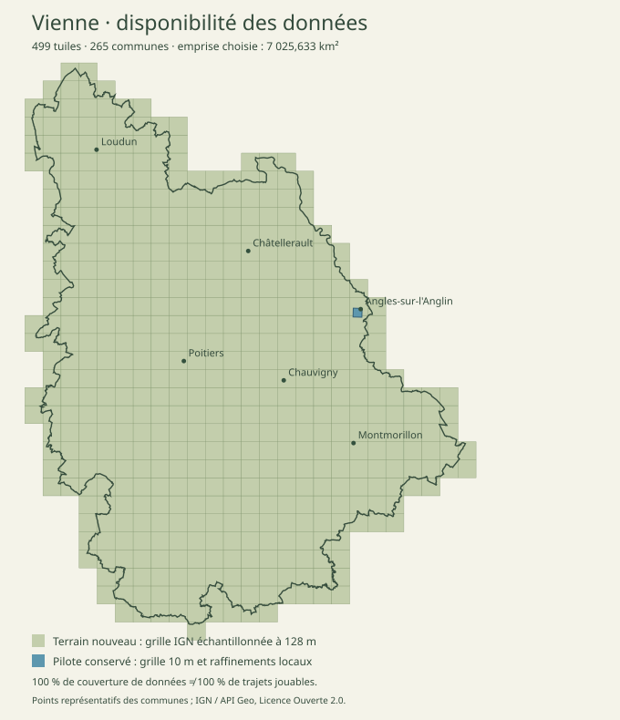
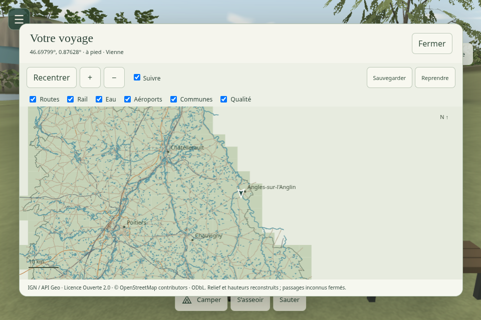
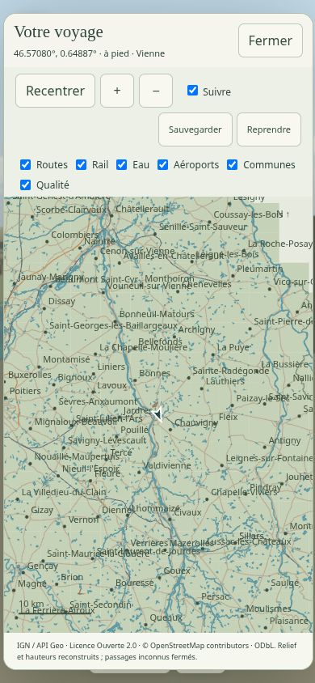
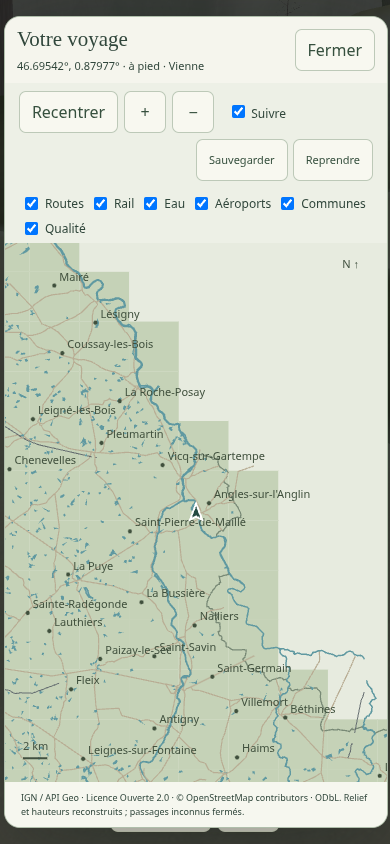
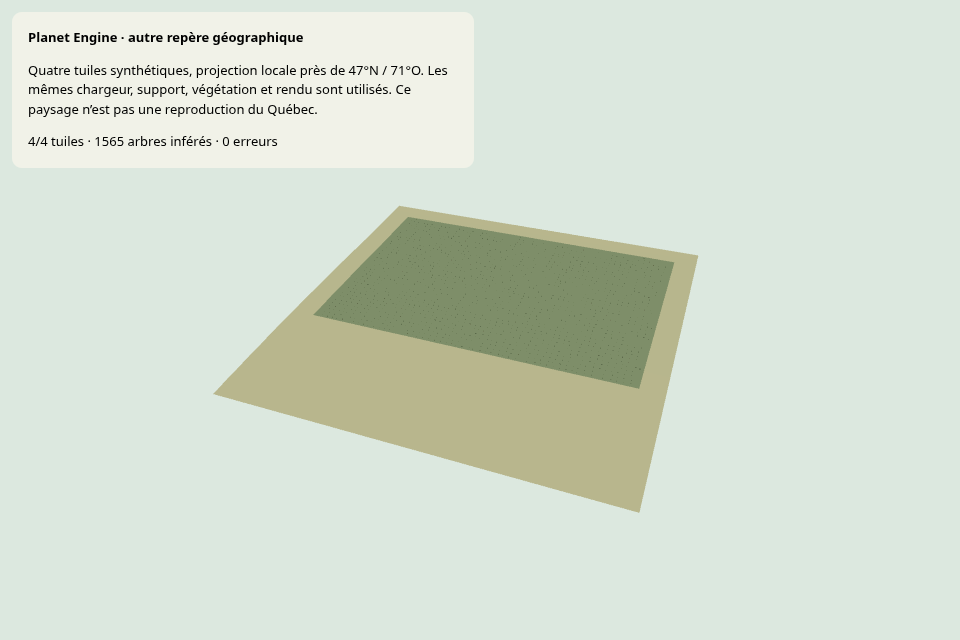
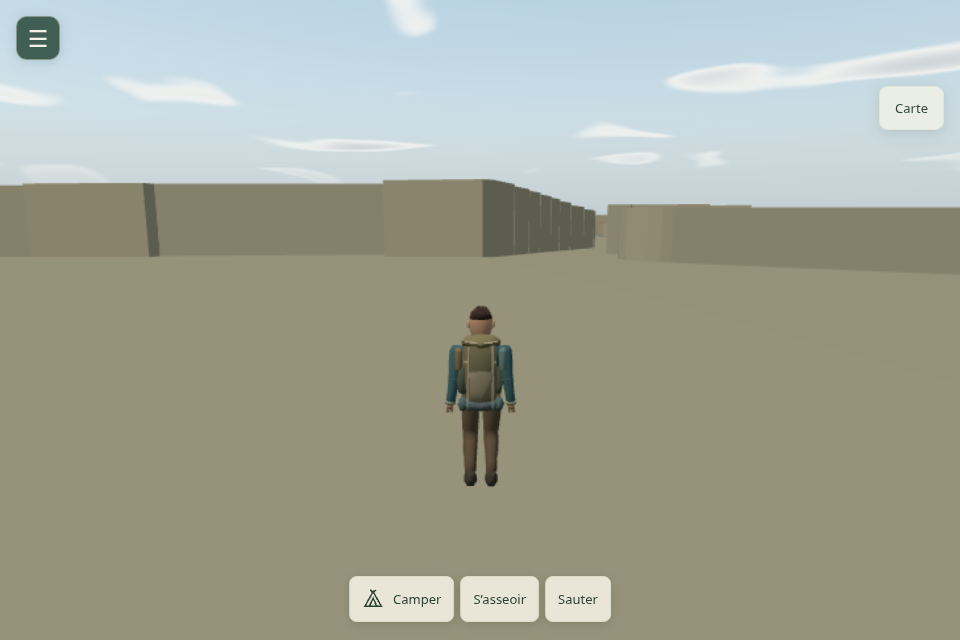
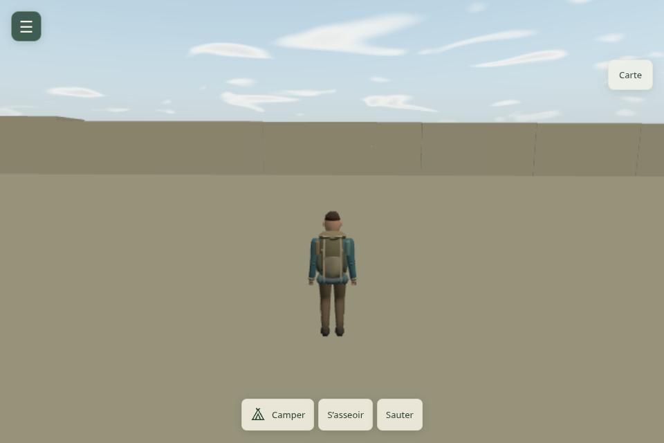
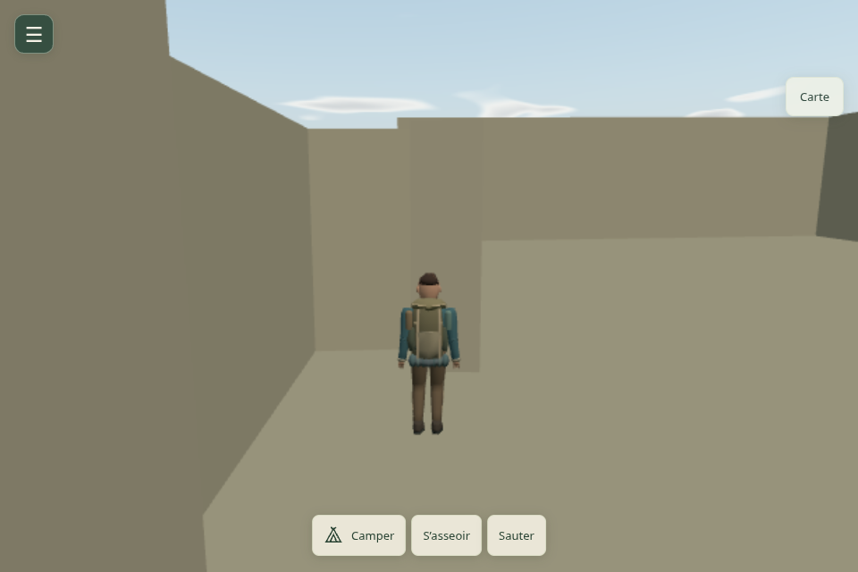
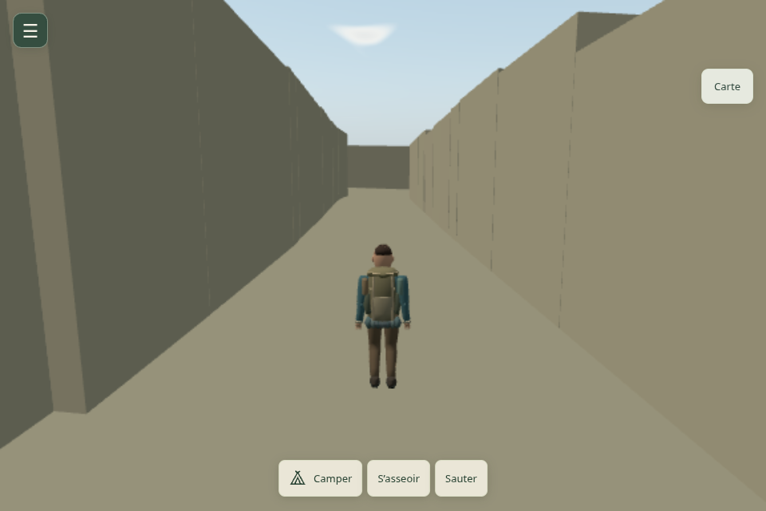
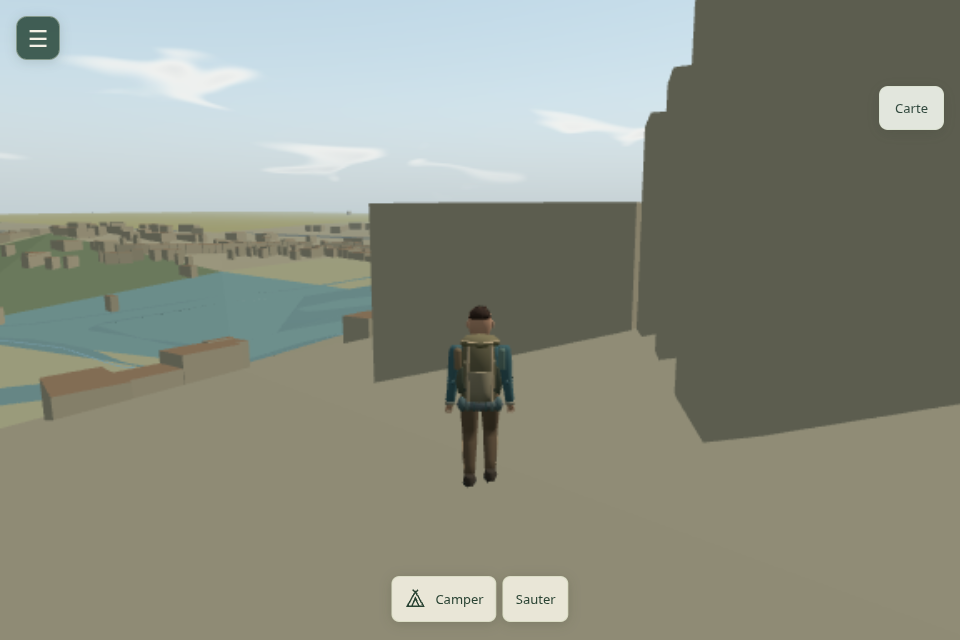

ENDLESS EARTH · Vienne / Planet Engine
Preuves disponibles, limites ouvertes
Rapport consolidé et matrice atteint / partiel / non atteint · Sources et licences · Architecture
Couverture et carte

Disponibilité / résolution source. Le raccord fin du pilote et les supports jouables restent à auditer séparément.
Carte Canvas alimentée par les données locales.
Viewport émulé, sans validation de performances d’un téléphone physique.
Pan/pincement CDP et interaction hors connexion après chargement, contrôlés dans ui-checks.json.
Quatre tuiles synthétiques dans un autre repère, mêmes fournisseurs ; pas une deuxième région réelle.Scènes réellement chargées

poitiers · placement diagnostique avant capture, pas une traversée
chatellerault · placement diagnostique avant capture, pas une traversée
montmorillon · placement diagnostique avant capture, pas une traversée
loudun · placement diagnostique avant capture, pas une traversée
chauvigny · placement diagnostique avant capture, pas une traverséeFilms natifs et correctifs
La matrice complète proche/lointain/oies, quatre angles, soleil/vent figés, toutes saisons et trois rivières nouvelles n’est pas achevée. Les traces indiquent activité, poses, positions et cadence ; les scripts documentent les entrées. Les pas de temps natifs divergent entre référence et candidat.
boat-3-native.webm · natif, SwiftShader · 3.58 images rendues/s · déplacement cumulé 97.2 mboat-5-native.webm · natif, SwiftShader · 1.55 images rendues/s · déplacement cumulé 68.3 mcar-attempt-1/car-native.webm · natif, SwiftShader · 6.32 images rendues/s · déplacement cumulé 7.8 m · parcours prévu non terminécar-native.webm · natif, SwiftShader · 8.33 images rendues/s · déplacement cumulé 1155.4 mquality-fixes/after-birds.webm · natif, SwiftShader · 1.13 images rendues/s · déplacement cumulé 0.0 mquality-fixes/after-run.webm · natif, SwiftShader · 0.91 images rendues/s · déplacement cumulé 128.1 mquality-fixes/after-shadows.webm · natif, SwiftShader · 1.04 images rendues/s · déplacement cumulé 9.1 mquality-fixes/after-walk.webm · natif, SwiftShader · 0.89 images rendues/s · déplacement cumulé 56.7 mquality-fixes/before-birds.webm · natif, SwiftShader · 1.48 images rendues/s · déplacement cumulé 0.0 mquality-fixes/before-run.webm · natif, SwiftShader · 1.65 images rendues/s · déplacement cumulé 229.2 mquality-fixes/before-shadows.webm · natif, SwiftShader · 1.55 images rendues/s · déplacement cumulé 15.1 mquality-fixes/before-walk.webm · natif, SwiftShader · 1.66 images rendues/s · déplacement cumulé 107.5 m Films d’essais interrompus, conservés avec leurs erreurs
Captures natives avant/après en 1:1
Mesures, traces et contrôles
Empreintes des artefacts inventoriés. Les originaux WebM sont dans quality-fixes/raw/. Servir le dépôt par HTTP pour lire tous les médias ; aucun service tiers requis.